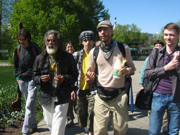
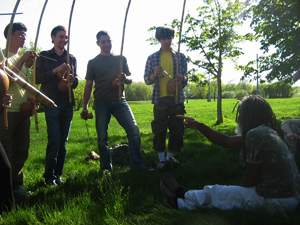
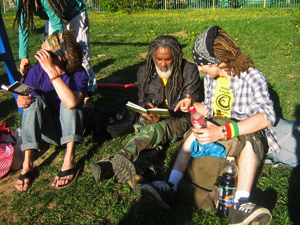
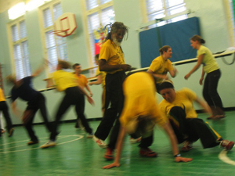
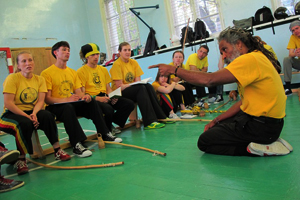
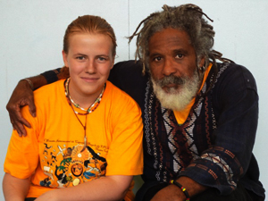

{семинар с Местре Кобра Манса}
После семинара я написала уже десяток стихийных постов в своих блогах о своих эмоциях и ощущениях. Когда мне задавали вопрос: «Как тебе семинар» — я понимала, что не могу высказаться, как все, лаконично и „по сути“, мысли мои сейчас в таком хаосе, что я долго думала, стоит ли вообще приводить их в порядок и писать полноценный большой отзыв о семинаре. Боюсь, что даже с попыткой все систематизировать, мой отзыв этот все равно выйдет беспорядочным и захламленным постоянными отступлениями от темы, так что не обессудьте)).
А мысли мои в таком хаосе лишь потому, что прошло всего 4 месяца с тех пор, как я занимаюсь капоэйрой в целом, и всего две недели с тех пор, как я занимаюсь капоэйрой Ангола в группе FICA Moscou. За эти две недели у меня уже порядком попуталось все в голове, особенно ввиду того, что все вокруг пытаются мне объяснить, что у меня неправильный подход, неправильное отношение и вообще все неправильное. Я честно пытаюсь себя перестроить и стараюсь прислушаться ко всем советам, что мне дают. Но вы понимаете, когда ты новичок, фильтровать нужную информацию от ненужной очень проблематично. Поэтому пока я доверяюсь только своим инструкторам, уж они точно знают, что надо делать.
Началась неделя семинара для нас со встречи Местре Кобра Манса в аэропорту. Честно говоря, я поначалу почему-то думала, что предложение «встретить его по всем традициям с родой прямо там» было шуткой. Оказалось, я неправа. И мы действительно повезли в Домодедово полный арсенал инструментов, кроме разве что атабаке (на этот счет я слышала что-то вроде «с ним будет неудобно убегать если что», что вызвало у меня окончательный приступ паники по поводу этой затеи). Несмотря на некоторый страх за проведение этого мероприятия, я не чувствовала себя неуютно. Во-первых, все-таки Имах производит впечатление человека, который знает что делает. Во-вторых, в целом атмосфера группы сглаживает все негативные эмоции, с ними как-то „легко“ и ну вот совершенно не страшно, что бы вы ни делали. Для меня подобный опыт – нечто абсолютно новое. Мы стояли возле входа в аэропорт и играли капоэйру, играли на инструментах, пели, не обращая внимания впялившихся в нас людей. Теперь я поняла весь фан проведения Roda de Rua. Это действительно очень весело.
Когда пришел Местре, он вышел в круг и поиграл со всеми нами по очереди. Первая игра с Местре для меня была одно сплошное непонимание, что же мне в итоге надо делать. Во-первых, предугадать даже примерно его движения у меня не получалось. Казалось, вот он передо мной, а в следующий момент уже совершенно в другом месте и положении, я вообще не успевала за ним уследить. Во-вторых, я конечно еще очень сильно не догоняю сути дела. Собственно, надо учиться. Потом поехали знакомиться. Сидя среди всех, я чувствовала себя немного «выбившейся из общей массы». Здесь сидели люди, которые долго-долго ждали этого момента. Для них это мероприятие настолько долгожданно, насколько только может быть. Мне же повезло: я только что пришла и уже попала на семинар с Местре этой группы. Я была очень рада, польщена и впечатлена этим знакомством, но в отличие от всех я, наверное, еще не осознала всю «важность» момента.
Следующую неделю вплоть до пятницы, до начала открытой части семинара, наши тренировки проводил Местре. Нам проводили классы движений, музыкальные занятия и нам задавали на дом домашнюю работу (почувствуй себя снова в школе!). Дома мы писали, учили и объясняли песни. Так как на самой первой тренировке, где всем, видимо в зависимости от опыта, раздали задания, меня не было, то я решила сама взять чуть больше, чем могла бы, и решила повозиться с ладаиньями, а не с корриду. Так как с песнями я вообще познакомилась всего 2 недели назад, было непросто. Но я решила, что стоит заставлять себя работать больше, и я разучила на этом семинаре свои первые четыре ладаиньи (мой выбор пал на Capoeira de Angola, A historia nos engana, Ladeira do Pelourinho и Igreja do Bomfim) и еще много-много новых корриду. Иногда приходилось дома с этим сидеть допоздна, но оно того стоило. Да и обычно я гораздо менее глупо себя чувствую, будучи полным новичком, если знаю, что я несмотря ни на что много работаю над собой. Это чисто психологически.
Мы также проводили музыкальные занятия прямо на улице, чем потрясали немного общественность вокруг. Но это было здорово. Нас учили играть, слушать, разнообразить свою игру вариациями, отвечать на вариации других, вести этакий „музыкальный диалог“ между беримбау и другими инструментами.А вообще на музыкальных классах я решила играть в основном на пандейру. Я понимала, что с беримбау я пока дружу не очень, я сбиваюсь, у меня вергу мотает из стороны в сторону, пальцы еще безумно болят, добрау то и дело вываливается, а стоит за ним наклониться, как Учитель тут же обозначал удар снизу (как прикажете от такого защищаться, когда у тебя в руках беримбау?). А Местре давал уже вполне себе полноценные ритмические рисунки с полным набором вариаций. И поэтому я решила, что будет лучше, если я не буду никого сбивать своей неумелой игрой, да и заодно получше с пандейру познакомлюсь. Не зря же я учусь на ударном факультете муз.училища, оно все-таки мне ближе)). Осваиваю ударные инструменты я довольно быстро, поэтому вот и решила поучиться на нем. За неделю разучила какие-то новые фишечки, было забавно)
Пятница была началом открытой части семинара, и народу стало значительно больше. Постепенно подтянулись те, кто еще не доехал до нас из других городов (хотя большая часть иногородних приехала уже к началу недели), пришли люди из других групп. Занятия проходили очень весело и в приятном формате смены музыкальных занятий на физические. Это позволяло быстро восстанавливать силы, когда они были уже на исходе. Мы занимались акробатикой и я, кажется, обнаружила у своего организма умение совершенно неожиданно преодолевать страхи. Нам дали движение (не запомнила, к сожалению, его названия), когда ты делаешь ау разворачиваешь немного корпус и прогибаешься немного назад, в итоге заканчиваешь ты движение не боком, а на четырех опорных точках лицом вперед. И я все никак не могла себя заставить его сделать. Даже несмотря на то, что я не чувствовала какого-то реального страха, тело не давало мне это сделать, я все равно упорно делала обычное колесо. Но на одном из следующих заданий мы делали ту же акробатику как уход от тезора. И я как раз наоборот, хотела сделать просто ау, но вдруг неожиданно для себя развернула корпус и прогнулась и поняла, что сделала то самое движение, которое никак не давалось. Просто ввиду расстояния от партнера и моего направления это движение оказалось более уместным и естественным, чем просто ау, и тело само его сделало, независимо от моего желания/страха и тп. Это стало для меня настоящим открытием.
В субботу с утра я проснулась с целым набором разных болей в организме. Самое отвратительное, что я защемила себе шею. Когда я проснулась, было ощущение, как будто я проснулась с дикого-дикого похмелья. Ноги были ватные, руки ломило, а головой я вообще не могла повернуть ни в одну, ни в другую сторону. Я думала, что видимо, дальше я «выбываю» из работы, потому что я действительно еле двигалась. Но я же человек неугомонный (за что меня в свое время ругали все мои тренера по всем видам спорта, открыто заявляя: «Ты бы избежала половины травм, если бы вовремя просто заставила себя вместо тренировки лечь на диван и просто пару часов полежать, ничего не делая»), у меня шило в одном месте. Закусив анальгином и поразмяв немного шею, я засела за недоделанное домашнее задание, решив, что пропустить что-либо за эти выходные я просто себе не позволю. Я уже разобралась с текстом ладаиньи на сегодня, осталось его только зазубрить, чтобы не сбиваться всякий раз, когда у меня вылетает из головы четвертая строчка в четверостишье (забавно, но почему-то вот поначалу реально именно четвертые строчки из головы всегда вылетали). Так как мне походу надо было еще перед тренировкой куда-то съездить, я учила этот текст прямо в дороге, пела дома у сестры вместе с кошкой, которую надо было покормить))).
Суббота получилось очень насыщенной, вместе со всеми запланированными музыкальными классами, классами движений, лекцией о поездке Местре в Анголу и потом свободными играми, мы провели там весь день. Очень кстати оказался дневной перерыв, после чего вдруг как-то само собой получилось, начали танцевать самбу. Во время перерыва я сидела играла на беримбау с ребятами, мы тогда отыграли практически все ритмы, какие знали, правда вот с Санта Марией запутались. Местре сказал что то, что мы играли как „Санта-Мария“ на самом деле просто вариация Жогу ди Дентру. А я упорно слышала, что это Санта Мария и кто-то меня поддержал (в общем, только одни названия запомнила, теперь мозг окончательно взорвался, так как все оказалось совсем по-другому). Короче с названиями немного не разобрались. Но какой же красивой была Иуна. Играла ее без перерыва, с таким огромным удовольствием, что даже боль в пальцах как-то не замечала. И вот когда самба вдруг неожиданно началась мы с беримбау подошли туда и поддержали ритм. Люди, я думала, я там помру. У меня правую руку к середине где-то уже просто свело от скорости, мизинец на левой вообще поначалу думала отвалиться. Но это было так безумно весело, что остановиться было просто невозможно!! Всем вокруг так радостно улыбалось, наверное это можно даже смело назвать бэкграундом всего семинара. Я знаю, слишком много у меня эмоций, но это все потому, что это мой самый-самый первый семинар, эта неделя полностью поменяла мои представления о капоэйре, все перевернулось просто с ног на голову.
А еще ко мне привязалась песня. Как-то так получилось, что я сама ее пела не раз и когда на одном из музыкальных занятий мы решали по очереди, что кто петь будет, я тут же сказала, что хочу вот ее петь, так что теперь всякий раз, когда я выхожу в круг, я слышу свою любимую песенку про кучию. Вдохновляет и все время вызывает улыбку)
Теперь про открытую роду в воскресенье и роду на Живом ТВ в понедельник. Честно говоря, не думала, что мне повезет оба раза играть с Местре, я вообще не думала, что выйду, столько народу было в воскресенье! Но в итоге вышла. Мне, оказывается, невероятно повезло, потому что в воскресенье Местре не стал играть со всеми ввиду определенных обстоятельств. После нескольких игр, он сел обратно за беримбау, долго перед всем извинялся и больше не выходил в круг. Когда я играла, я старалась сосредоточить свое внимание на том, с чем у меня обычно хуже всего – движением и уклонами от ударов. Поэтому я в основном старалась двигаться без суеты, уходить в нужную сторону от ударов, а вот сама ударов практически не наносила. На это обратил внимание Местре и после каждого своего удара открывался и практически вставал без движения, как бы говоря: «Ну же, контратакуй», а я все ползала где-то по полу, как будто линзу потеряла…)
Ну не все же сразу! Я пытаюсь каждый раз одолеть хотя бы одну проблему, потому что все сразу охватить я просто не могу пока. Наблюдать за игрой Местре с остальными было крайне интересно. Я уже обращала внимание на это когда смотрела видео с ним, но воочию видеть это было просто потрясающе. Он не просто двигается, он перетекает из одного положения в другое, причем делает этот так быстро и так плавно/естественно одновременно, что иногда ты даже задаешь себе вопрос: «А как он оказался здесь?». Он не падает. То есть если кому-то удалось вывести его из равновесия (чего по-моему я практически не видела), когда он стоит на ногах, он переворачивается и встает на руки/на голову и наоборот. Это просто потрясающе. А его удары. Он так точно все рассчитывает, что те удары, которые он „обозначает“, останавливаются буквально в сантиметре (не больше!) от тебя. Ну и конечно же те удары, которые рассчитаны в цель, попадают так, как надо (это было заметно по тем людям, которые буквально «улетали в толпу» с некоторых его ударов, а такое тоже было).
В понедельник мы проводили последнюю роду за неделю на Живом ТВ. Система этого интернет-канала подразумевает запись и трансляцию в прямом эфире. Найти их базу было крайне непросто. В 5 часов я была на савеловской и только в 6 мы были на месте. И это притом, что идти там, если знаешь, куда, всего минут 10. Мы плутали с инструментами за плечами (я сносила прохожих чехлом с вергами), спрашивали у прохожих, но разумеется никто ничего не знает. В очередной раз отметила про себя, что найти нужный подвальчик с репбазой в промзоне это вообще нереально. В 7 мы только начали. Я думала, не буду выходить в круг, но в итоге опять вышла. И опять с Местре. На этот раз, несмотря на то, что «напропускала» я даже еще больше, чувствовала я себя гораздо естественнее. Как-то вот спокойнее было. То ли потому что народу меньше было и как-то не так нервно что ли было выходить, то ли потому, что игра в воскресенье стала для меня некоторой „отправной точкой“ для дальнейшей работы. В очередной раз под любимую песенку про грызуна изобразила ну хоть что-то, чему я научилась за эти 4 месяца/2 недели)).
Знакомство с Местре было для меня чем-то поистине особенным, пусть я и действительно была в итоге там самой неопытной из всех. Несмотря на то, что я не знаю этого человека и вижу его впервые в жизни, он создавал по-семейному теплую и дружественную атмосферу. В общении с ним не чувствовалось какого-то неудобства – он очень добрый и приветливый. Много было шуток, смеха, улыбок, на этом был построен весь семинар в течение всей недели. Он очень внимательно относился ко всем ученикам – постоянно задавал вопросы: что мы думаем, что мы чувствуем, что мы услышали/увидели, чему мы научились и какие у нас есть вопросы. Было забавно то, что он редко прямо отвечал на вопросы (только если вопрос в итоге оказывался и правда «на засыпку»), когда ему задавали вопросы, он старался сделать так, чтобы мы в итоге сами ответили на свой же вопрос. Иногда на это тратилось больше времени, чем, видимо, планировалось, но он заставлял нас самих искать и находить ответы на свои вопросы. А сам постоянно повторял: «Я здесь, не чтобы облегчить вашу жизнь, а наоборот, чтобы сделать ее сложнее». Он говорил нам множество всяких мудрых вещей, которые иногда даже не относились к капоэйре, но касались всего остального в нашей жизни. Делился просто своим жизненным опытом с нами со всеми. И за это ему спасибо. Я никогда не забуду эту неделю и с нетерпением буду ждать следующего семинара.